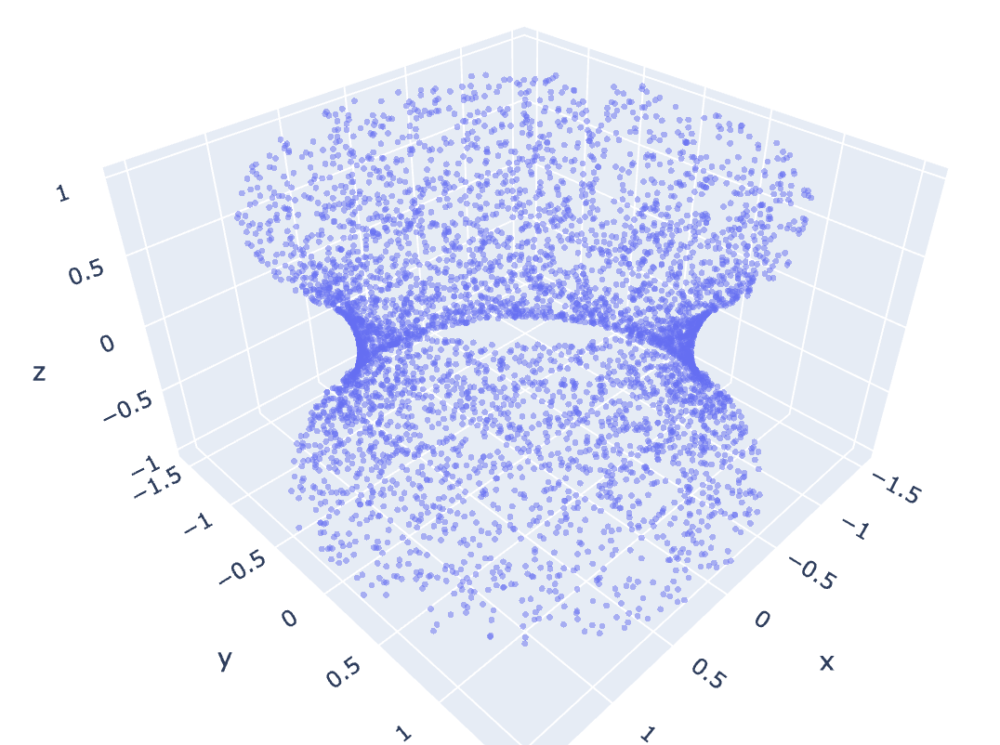
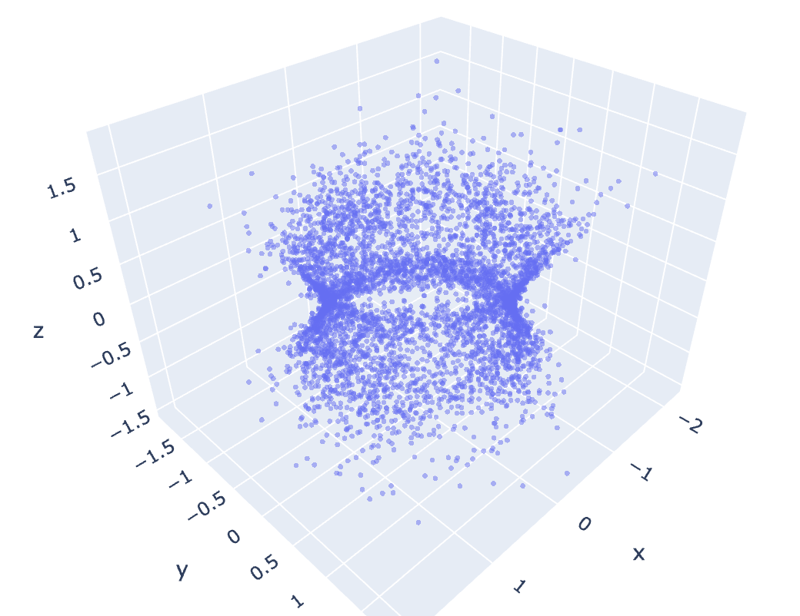
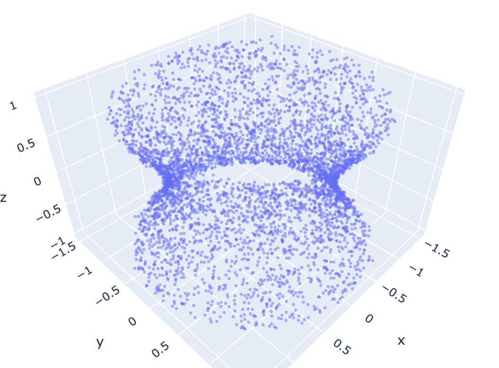
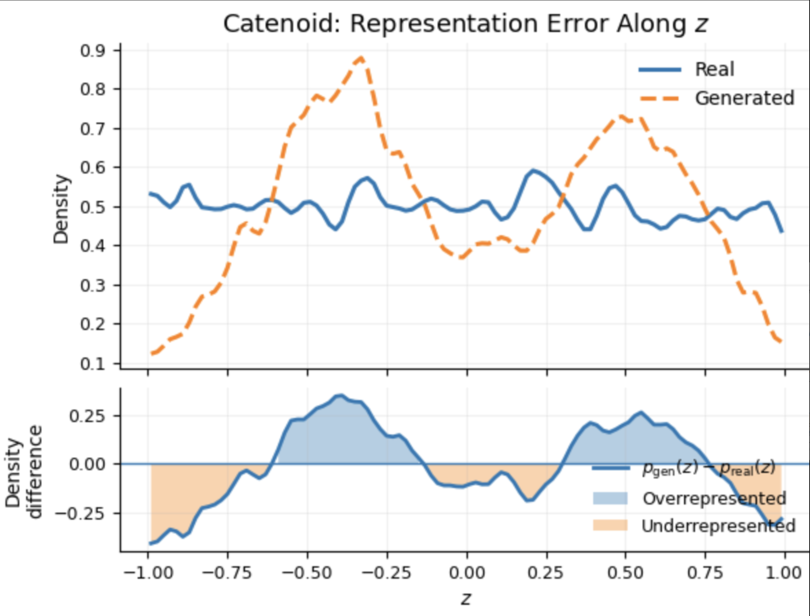
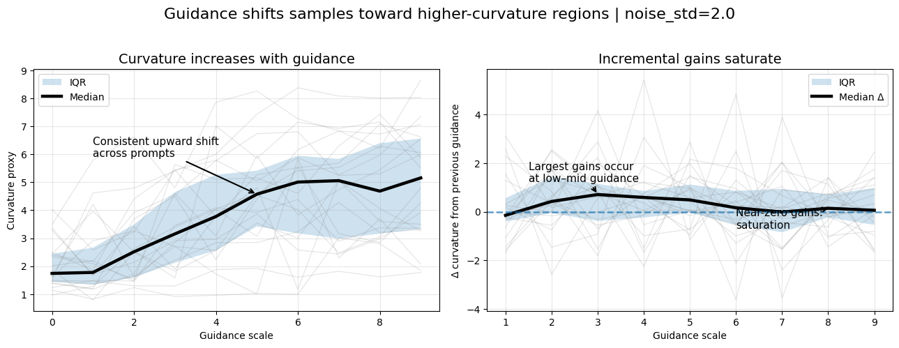
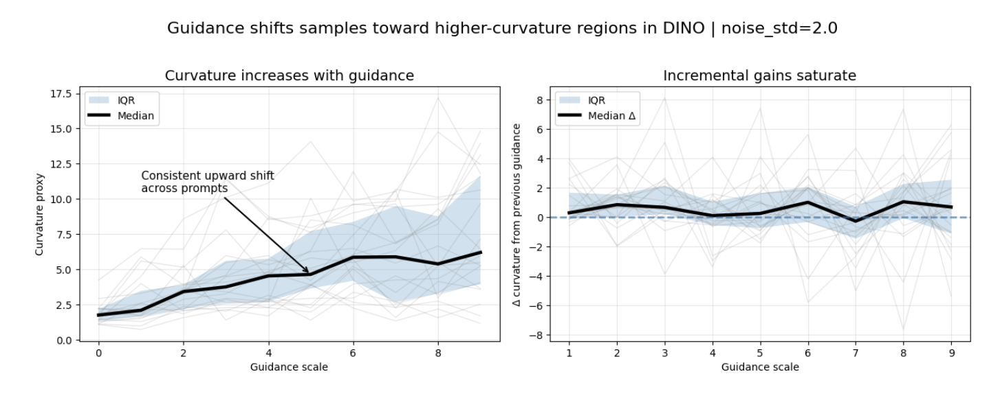
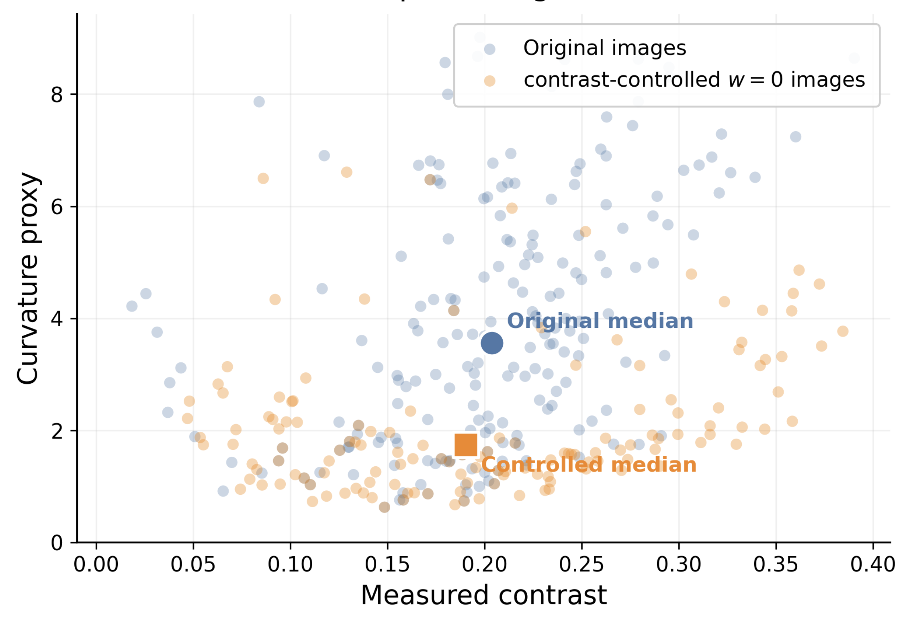
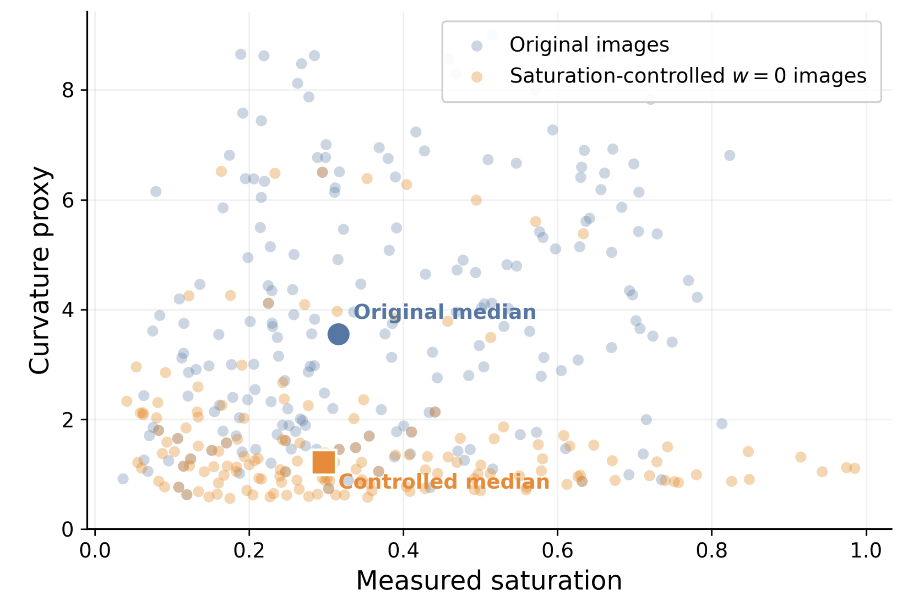
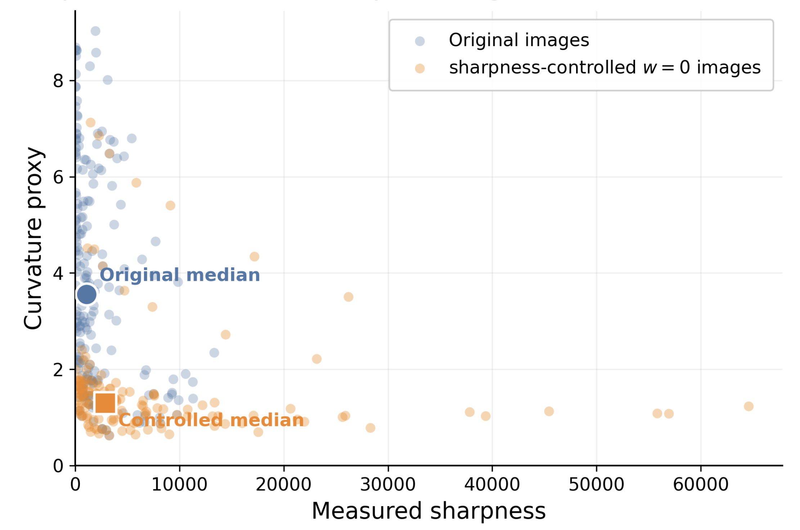

| A Geometric View of Why Guidance Improves Diffusion Samples | |||
| Ali Backour | |||
| May 2026 · Exploratory research note | |||
| A Geometric View of Why Guidance Improves Diffusion Samples | |||
| Ali Backour | |||
| May 2026 · Exploratory research note | |||



Modern text-to-image diffusion models are rarely used in their purely unguided form. In principle, this is surprising: if a diffusion model has learned the data distribution well, then its unguided reverse process should already produce sharp, coherent, high-quality samples. In practice, however, we almost always turn on some form of guidance, especially classifier-free guidance [2]. Increasing the guidance scale often makes images sharper, more detailed, and more aligned with the prompt. This empirical success leaves a basic mystery: what exactly is wrong with the unguided model? Purely unguided samples are often noticeably worse—blurrier, less structured, and less semantically coherent.
The usual answer is that guidance improves conditional alignment. That is true, but it is not the whole story. Guidance does not merely choose between labels or prompts. It changes the sampling dynamics. It can make an otherwise blurry, average-looking sample move toward a more structured and specific one.
In this post we test a geometric version of that hypothesis. The idea is simple: some parts of a data manifold may be harder to learn because the score field changes faster there. A low-capacity or imperfect model may still learn the overall support, while putting too little probability mass on those difficult regions. Guidance may then help by pushing samples back toward them.
The evidence comes in two parts. First, we use a toy manifold where the geometry is known exactly. Then we look at generated images, where true manifold curvature is inaccessible, using finite-difference curvature proxies in learned representation spaces.
For a controlled experiment, we use a catenoid: a two-dimensional surface in three-dimensional space which is shown in Figure 1. It looks like two flared sheets connected by a narrow neck. The important feature is that the geometry is not uniform. The neck is the highest-curvature region, while the outer parts are flatter.
We train a small diffusion model, with roughly 2.2K parameters, on samples from this surface. This setting is intentionally simple. Unlike real images, we know the data manifold, we know where the high-curvature region is, and we can directly ask whether the generated distribution puts the right amount of probability mass at each value of z.
As shown in Figure 1, the result is not that the unguided model completely fails. It learns the rough catenoid shape. The failure is subtler: it misallocates probability mass. In particular, the generated samples visibly thin out near the neck, the region where the surface bends most quickly. The model also shows boundary effects near the truncated ends of the surface.

Next we train the same model with conditioning on the catenoid coordinate z. This is not literally classifier-free guidance, but it is a clean analogue: the model is no longer asked to represent the whole distribution at once. It must model the conditional distribution at each slice of the surface.
That changes the failure mode. As in Figure 1, once the model is conditioned on z, it can no longer “pay for” a hard region by putting less mass there. The coverage near the neck becomes much closer to the target distribution.
This suggests one possible interpretation of guidance. Guidance may not only improve prompt alignment; it may also reduce the model's freedom to average over, blur, or avoid difficult regions of the distribution (e.g. the neck area of the catenoid).
z in a catenoid is cleaner than CFG in a text-to-image model. But it isolates the mechanism: conditioning can counteract geometry-dependent mass redistribution.
A diffusion model can be viewed as learning a score field: a vector field that tells noisy samples how to move back toward high-density data. If the clean data distribution is concentrated near a low-dimensional manifold M, then the noisy distribution at scale σ has score
When σ is small, this score has a simple geometric interpretation. For a noisy point z near the manifold, the dominant part of the score points back toward the nearest clean point on the manifold.
Let x = ΠM(z) be the nearest-point projection of z onto the manifold M. We can write
where NxM is the normal space at x. To first order, the normal component of the score behaves like
Thus, learning the score requires learning how nearby noisy points project back onto the manifold. Curvature matters because it controls how quickly this projection changes: on a flat plane the normal direction is constant, while on a sharply curved surface small movements can substantially change the normal direction and therefore the denoising vector.
This suggests a simple failure mode. High-curvature regions induce faster-varying score fields, which may be harder to approximate with limited capacity, data, or optimization. Sampling can then turn these local score errors into coverage errors: the model may learn the overall support while assigning too little probability mass to geometrically difficult regions.
For real images, the true image manifold lives in a very high-dimensional space, and estimating its curvature directly is inaccessible. In order to get an estimate of what the curvature of the manifold at some point is, we turn to encoders f, such as the VAE of a latent diffusion model or DINO.
First, we define the sensitivity of f at a point x to be
One can think of S_f as an estimate of how much the encoder f disturbs the space around the point x. This corresponds to a first-order measurement of the local geometry, analogous to the first fundamental form of the manifold.
Hence, the change of the sensitivity at a point x is a measure of how bent the space is, i.e. curvature. This motivates us to define the curvature proxy
Geometrically, this is analogous to measuring how rapidly the local tangent behavior changes around x, which is the basic phenomenon underlying curvature.
We generate images with Stable Diffusion [3] while varying the classifier-free guidance scale from w = 0 to w = 9 for 20 different prompts. For each prompt and guidance value, We compute the curvature proxy in two representation spaces: SD-VAE (the VAE encoder in the Stable Diffusion model [3]) and DINO [4].
| Representation | w=0 | w=3 | w=6 | w=9 | Positive prompts | Median Δ 0→9 |
|---|---|---|---|---|---|---|
| SD-VAE | 1.74 | 3.15 | 5.01 | 5.16 | 19/20 | 134.0% |
| DINO | 1.73 | 3.74 | 5.85 | 6.19 | 19/20 | 272.5% |


The image experiment (Figure 2, Table 1) is consistent with the toy catenoid experiment. In both cases, the issue is not that unguided diffusion completely fails. Rather, it seems to misallocate probability mass: it captures the rough distribution, but underrepresents regions that are geometrically harder to model. On the catenoid, this appears near the high-curvature neck; in images, unguided samples appear to lie in smoother or less locally nonlinear regions of representation space.
This gives a different way to think about guidance. It is not only making samples “more aligned with the prompt.” It is also correcting a geometric bias in the unguided model, pushing samples toward regions with more structure, detail, and local curvature. This interpretation is grounded in the mathematical intuition developed earlier: regions of high curvature induce more rapidly varying score fields, making them harder for the unguided model to represent accurately. In this view, guided samples look better partly because they occupy parts of the image manifold that unguided sampling tends to underfit.
A natural objection is that high guidance is known to create low-level artifacts. Maybe my curvature proxy is not detecting geometry at all. Maybe it is just detecting sharper edges, stronger contrast, or more saturated colors.
To test this, we take unguided images and artificially modify contrast, saturation, and sharpness. Then we recompute the same curvature proxy. These manipulations change visible image statistics, but they do not reproduce the same monotone pattern observed when the guidance scale itself is increased.



This supports the geometric interpretation developed above. The proxy is not simply reacting to images becoming more visually intense; it seems to capture a more structural change in the generated samples. In other words, guidance does not merely add sharpness or saturation. It appears to move samples into regions of representation space with genuinely different local geometry, consistent with the idea that unguided diffusion underfits more complex parts of the image manifold.
These experiments give evidence for a geometric mechanism, but they do not directly measure the true curvature of the image manifold. In the real-image setting, the curvature proxy is computed through encoders such as SD-VAE and DINO, so the absolute values depend on the representation. The main evidence is the consistent trend across different feature spaces, not the precise numerical value of the proxy.
The catenoid experiment is also a simplified analogue of guidance, not a full model of classifier-free guidance in text-to-image systems. Conditioning on z cleanly shows that extra information can remove a geometry-dependent coverage bias on a known manifold, while CFG combines conditional and unconditional predictions across many denoising steps and interacts with prompt semantics and sampling dynamics.
Overall, these results suggest that guidance does more than improve prompt alignment: it may also correct a geometry-dependent weakness in unguided diffusion. On the catenoid, the unguided model learns the global surface but misallocates mass near difficult regions such as the high-curvature neck and boundaries. In real images, increasing guidance consistently moves samples toward higher curvature-like regions in SD-VAE and DINO feature spaces, while artifact controls suggest that this trend is not simply caused by saturation, contrast, or sharpness.
The most important future direction is to turn this diagnosis into a fix: if unguided diffusion underrepresents geometrically difficult regions, can we design training objectives, sampling corrections, or curvature-aware regularizers that improve unguided generation directly, without relying on guidance as a post-hoc correction?